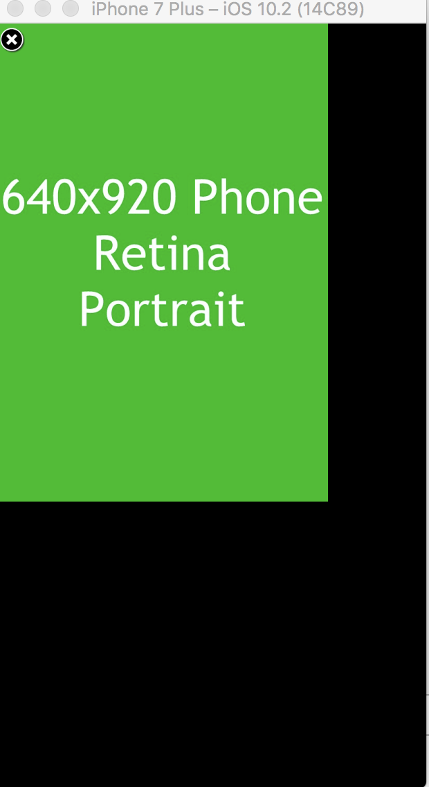

5 Request Interstitial Ad Reference
5 Request Interstitial Ad Reference
Requesting Interstitial Ads
You can also display interstitial ads to your MPSPage, very similarly to the way you added a banner ad.
You will continue expanding the MPSPage instance that you created earlier. To request an interstitial ad we add the following code to the ViewController.swift file.
page.getInterstitialAd(adUnit: "testinterstitial", success: { [weak self] (inter) in
if let sSelf = self {
inter.present(fromRootViewController: sSelf)
}
}) { (error) in
print(error.localizedDescription)
}
Or, if you’re following along in Objective-C add the following to the ViewController.m file.
NSDictionary *targeting = [NSDictionary dictionaryWithObjectsAndKeys: "targetingValue", "targetingKeys", nil];
[page getInterstitialAdWithAdUnit:@"testinterstitial" additionalTargeting:targeting success:^(MPSInterstitialAd * _Nonnull inter) {
ViewController *sSelf = wself;
if (sSelf) {
[inter presentFromRootViewController:sSelf];
}
} failure:^(NSError * _Nonnull) {
NSLog(error);
}];
Build and run the application.
You will see the following result in the simulator.
Result
Congratulations, you’ve successfully made your interstitial ad request programatically!
